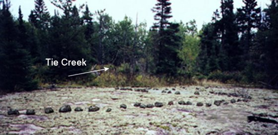

|
The Petroform site Tie Creek
Area Site #7 is extremely isolated. The purpose and placement of the
snake or waveforms seems to be markers for the energy flow. This site
(#7) shares an alignment with one of the energy lines that run through
the large Primary Site (1/2 mile away). Also, it shares an alignment
with two other sites (1/2 mile to the south - Site#6) and also Bannock
Point (2 ½ miles south). This wave or snake object also points in the
direction of an energy line that runs through the Primary Site. Other
sites in the Whiteshell also have snakes that point in the direction of
the energy lines.
|
||
|
 |
||
|
|
||